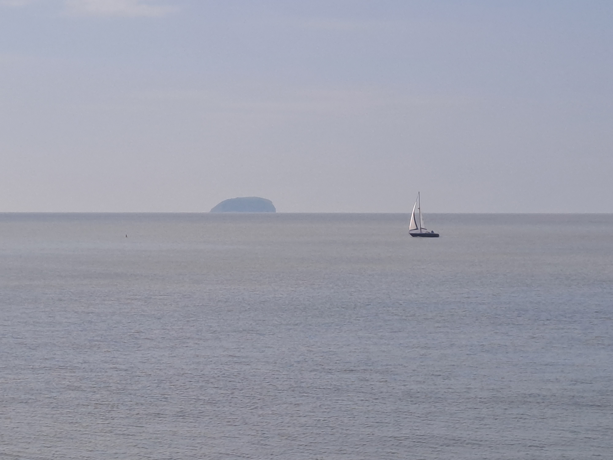
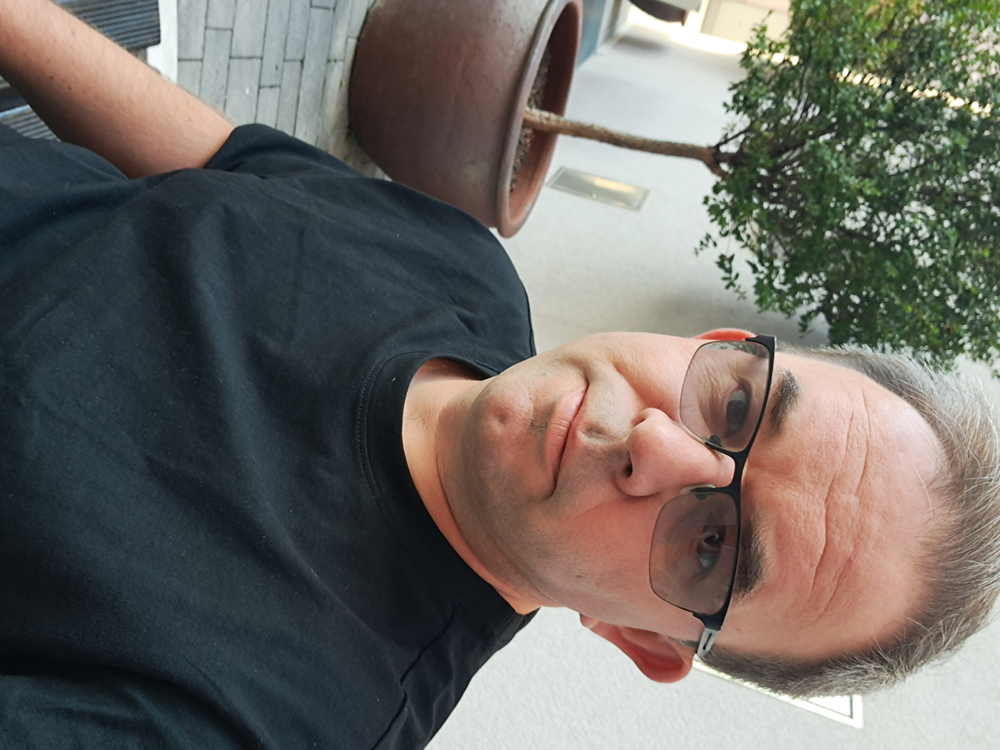
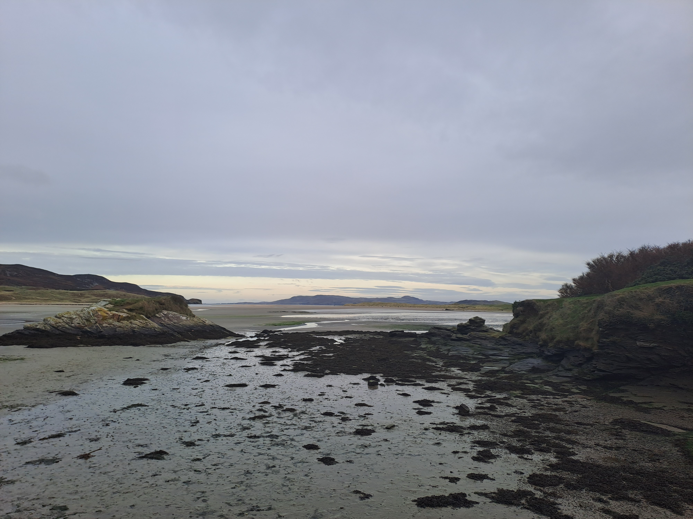

Chapter I
Professional Profile
How I operate in regulated environments, with emphasis on discretion, service continuity and practical standards.
Open chapter
Chapter II
My experience spans NHS administration and project management, enterprise information security and technical support, customer operations, sales administration, legal claims support and earlier Civil Service-adjacent work.
Across sectors, the common thread is dependable delivery in environments where standards, confidentiality and continuity are non-negotiable.

Career Path
North Bristol NHS Trust (2024-Present): Band 4 Administrator and Operations Support across Cardiac Testing, Infection Prevention and Control, and Tissue Viability. Work includes referrals, scheduling, results handling, reporting, audit preparation and governance documentation in high-volume, time-critical workflows.
Motability Operations and South West Truck & Van (2022-2024): customer and sales administration roles covering lease management, billing, renewals, complaints, logistics, invoicing, compliance documentation and partner liaison.
Optum (Unitedhealth Group) / Pramerica (Prudential Insurance Co of America) (2012-2022): information security and technical operations roles spanning access management, ISO-aligned controls, hardware lifecycle governance, procurement and global project support, including Brexit planning and pandemic-era remote working programmes.
Systems and platforms used include Office 365, ServiceNow, Ariba, Active Directory, Tableau and enterprise mainframe environments.
Chapter Pages
Chapter I
How I operate in regulated environments, with emphasis on discretion, service continuity and practical standards.
Open chapterChapter II
Career progression across NHS administration, information security, technical support, customer operations and legal administration.
Open chapterChapter III
Current focus in writing, documentation systems, low-complexity web build and responsible use of digital tools.
Open chapterExperience brings perspective, resilience, and practical solutions under pressure.
